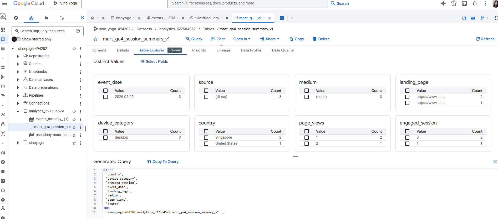
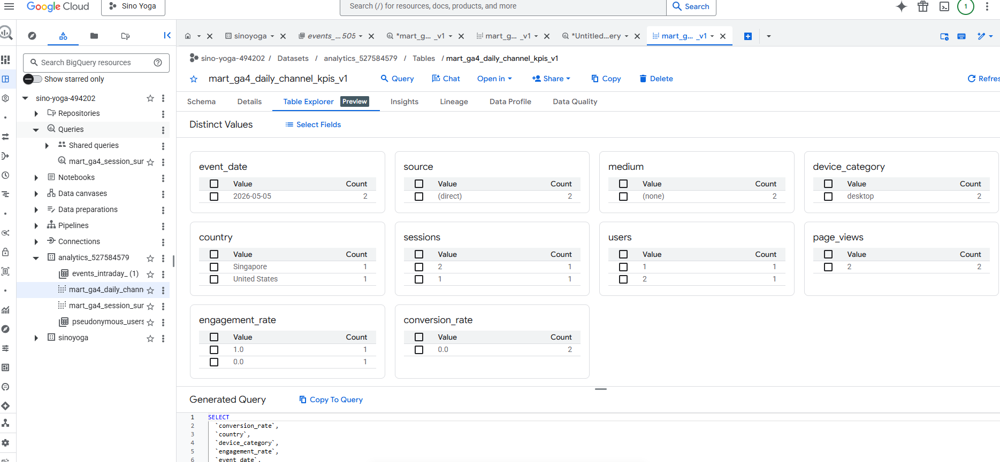

| Stakeholder Layout | ||||
|---|---|---|---|---|
| Q1 | ||||
| KPI | Metric Definition | Breakdown | Data Source | Assumptions |
| Impressions | Number of times a video thumbnail is shown to users on YouTube, measures how often content is seen reach and visibility of videos | Traffic Source (Search, Browse, Suggested | YouTube Studio Analytics | Search Traffic= high intent users |
| Click-Through Rate (CTR) | CTR = (Clicks / Impressions x 100) Measuring how effectively titles/thumbnails drive clicks on videos | Video Title /Keyword & UTM | YouTube, GA4 & GTM | CTR reflects content packaging effectiveness |
Sino Yoga: Marketing Analytics Final Client Report
IBM 6530 — Spring 2026
1. Business Context & Measurement Plan
Client Overview
Sino Yoga is a cross-cultural yoga and wellness brand founded by Yang Qi, integrating Traditional Chinese Medicine with yoga practice through her signature Five-Element Meridian Yoga method. The brand is expanding from China into the U.S. market and uses YouTube (@Sinoyoga) as its primary discovery channel, with the long-term goal of monetizing its audience through tiered, subscription-based yoga memberships. Sino Yoga maintains a multi-platform digital presence across YouTube, WeChat, a newly launched Facebook page, and the Sino Yoga website.
Business Objectives
Sino Yoga’s primary growth objectives shape the analytical scope of this engagement:
- Increase brand awareness across markets
- Build a cohesive multi-channel platform experience
- Grow subscriber base across YouTube and the website
- Strengthen brand visibility in U.S. and international markets
- Improve viewer retention and returning audience rate
- Develop a sustainable monetization pathway
Presentation Slides
2.Descriptive Insights
Data Source
Big Query data used linked from Google Analytics of the Sino Yoga Website. Also exported old GA4 data before linked to Big Query could occur since Big Query only shows events from when it was linked to GA4 only limited data available.
Data Mart
Purpose
This analytics mart supports Sino Yoga’s digital marketing dashboard by standardizing website and campaign KPIs for reporting in Looker Studio. The mart is designed to reduce repeated GA4 event-level queries and create consistent KPI definitions across the team.
Business Questions / KPIs Supported
This mart supports questions such as:
How much website traffic is Sino Yoga receiving?
Which channels drive the most sessions?
Are users engaging with the website?
Which landing pages perform best?
Which devices and locations represent the strongest audience segments?
Chosen Grain
Session-level grain
Big Query
View 1: mart_ga4_session_summary_v1
```sql
CREATE OR REPLACE VIEW `sino-yoga-494202.analytics_527584579.mart_ga4_session_summary_v1` AS
WITH base_events AS (
SELECT
PARSE_DATE('%Y%m%d', event_date) AS event_date,
user_pseudo_id,
(
SELECT value.int_value
FROM UNNEST(event_params)
WHERE key = 'ga_session_id'
) AS ga_session_id,
event_name,
(
SELECT value.string_value
FROM UNNEST(event_params)
WHERE key = 'page_location'
) AS page_location,
(
SELECT value.int_value
FROM UNNEST(event_params)
WHERE key = 'engagement_time_msec'
) AS engagement_time_msec,
traffic_source.source AS source,
traffic_source.medium AS medium,
traffic_source.name AS campaign,
device.category AS device_category,
geo.country AS country,
geo.region AS region
FROM `sino-yoga-494202.analytics_527584579.events_*`
)
SELECT
event_date,
user_pseudo_id,
CONCAT(user_pseudo_id, '-', CAST(ga_session_id AS STRING)) AS session_key,
COALESCE(source, '(direct)') AS source,
COALESCE(medium, '(none)') AS medium,
COALESCE(campaign, '(not set)') AS campaign,
ANY_VALUE(page_location) AS landing_page,
ANY_VALUE(device_category) AS device_category,
ANY_VALUE(country) AS country,
ANY_VALUE(region) AS region,
COUNTIF(event_name = 'page_view') AS page_views,
SUM(COALESCE(engagement_time_msec, 0)) / 1000 AS engagement_seconds,
MAX(CASE
WHEN event_name IN ('sign_up', 'form_submit', 'purchase') THEN 1
ELSE 0
END) AS converted,
MAX(CASE
WHEN COALESCE(engagement_time_msec, 0) > 0 THEN 1
ELSE 0
END) AS engaged_session
FROM base_events
WHERE ga_session_id IS NOT NULL
GROUP BY
event_date,
user_pseudo_id,
session_key,
source,
medium,
campaign;
```
Output:
| Field | Definition |
|---|---|
| event_date | Date of the session |
| user_pseudo_id | Anonymous GA4 user ID |
| session_key | Unique session identifier |
| source | Traffic source |
| medium | Traffic medium |
| campaign | Campaign name |
| landing_page | First or representative page in session |
| device_category | Device type |
| country | User country |
| region | User region/state |
| page_views | Number of page views in session |
| engagement_seconds | Total engagement time in seconds |
| converted | Whether session had a conversion |
| engaged_session | Whether session had engagement |
View 2: mart_ga4_daily_channel_kpis_v1
```sql
CREATE OR REPLACE VIEW `sino-yoga-494202.analytics_527584579.mart_ga4_daily_channel_kpis_v1` AS
-- Daily channel-level KPI table for Looker Studio
-- Aggregates session-level mart into reporting-ready KPIs
SELECT
event_date,
source,
medium,
campaign,
device_category,
country,
COUNT(DISTINCT session_key) AS sessions,
COUNT(DISTINCT user_pseudo_id) AS users,
SUM(page_views) AS page_views,
SUM(engagement_seconds) AS engagement_seconds,
SUM(converted) AS conversions,
SUM(engaged_session) AS engaged_sessions,
SAFE_DIVIDE(SUM(engaged_session), COUNT(DISTINCT session_key)) AS engagement_rate,
SAFE_DIVIDE(SUM(converted), COUNT(DISTINCT session_key)) AS conversion_rate,
SAFE_DIVIDE(SUM(engagement_seconds), COUNT(DISTINCT session_key)) AS avg_engagement_seconds_per_session
FROM `sino-yoga-494202.analytics_527584579.mart_ga4_session_summary_v1`
GROUP BY
event_date,
source,
medium,
campaign,
device_category,
country;
```| Field | Definition |
|---|---|
| event_date | Reporting date |
| source | Traffic source |
| medium | Traffic medium |
| campaign | Campaign name |
| device_category | Device type |
| country | User country |
| sessions | Total sessions |
| users | Total users |
| page_views | Total page views |
| engagement_seconds | Total engagement time |
| conversions | Total conversions |
| engaged_sessions | Total engaged sessions |
| engagement_rate | Engaged sessions / sessions |
| conversion_rate | Conversions / sessions |
| avg_engagement_seconds_per_session | Engagement seconds / sessions |

Data Studio Dashboard
https://datastudio.google.com/embed/reporting/8fb540f7-c90c-42e4-b9d8-a06a8e872fc6/page/NDKxF
Key Insights from Studio Dashboard
The Studio dashboard provides a snapshot of Sino Yoga’s website performance and shows that the site is still in an early growth stage with limited engagement.
Overall performance
148 active users
Reflects a small but growing audience, meaning awareness efforts (e.g., YouTube, social, or direct sharing) are starting to bring people to the site.Average session duration: 20 seconds
This is extremely low and suggests that users are not finding what they expect or are not motivated to stay. It may indicate unclear messaging, slow loading, or weak content relevance.Bounce rate: 89%
A very high bounce rate means most users leave after viewing only one page. This signals issues with:- First impressions (design or clarity)
- Content relevance to user intent
- Lack of clear next steps
Traffic Sources
- Direct traffic dominates
Most users are arriving directly, which often means:- Traffic is coming from YouTube links, social media, or shared URLs
- There is low discoverability via search engines
- Very little Paid Search and Organic Search traffic
This suggests:- SEO is not yet optimized
- Paid campaigns are either minimal or not performing strongly
- Site is not currently benefiting from scalable acquisition channels
- Direct traffic dominates
Most users are arriving directly, which often means:- Traffic is coming from YouTube links, social media, or shared URLs
- There is low discoverability via search engines
- Very little Paid Search and Organic Search traffic
This suggests:- SEO is not yet optimized
- Paid campaigns are either minimal or not performing strongly
- Site is not currently benefiting from scalable acquisition channels
User Behavior
- Mostly new users
- People are visiting once but not coming back
- The site is not yet building retention or loyalty
- Primarily desktop users
This suggests:- The main audience currently accesses content via desktop
- If mobile experience is weak, it could be limiting growth
- Low engagement overall
Users are:- Leaving quickly
- Not navigating to additional pages
- Not interacting with features
- This points to weak user experience or unclear value proposition
Content performance
- /en-us landing page drives nearly all traffic
This shows:- It is the primary entry point
- It carries the full burden of engagement and conversion
- Other pages (e.g., /zh-cn, /about-us) have minimal traffic
This suggests:- Users are not exploring the site further
- Internal links or content flow may be weak
- The site lacks a strong content journey or funnel
User Behavior
- Mostly new users
- People are visiting once but not coming back
- The site is not yet building retention or loyalty
- Primarily desktop users
This suggests:- The main audience currently accesses content via desktop
- If mobile experience is weak, it could be limiting growth
- Low engagement overall
Users are:- Leaving quickly
- Not navigating to additional pages
- Not interacting with features
- This points to weak user experience or unclear value proposition
Content performance
- /en-us landing page drives nearly all traffic
This shows:- It is the primary entry point
- It carries the full burden of engagement and conversion
- Other pages (e.g., /zh-cn, /about-us) have minimal traffic
This suggests:- Users are not exploring the site further Internal links or content flow may be weak
- The site lacks a strong content journey or funnel
Geographic insights
- Traffic concentrated in a few regions (e.g., Singapore, U.S.)
This indicates:- Marketing efforts are reaching specific target markets
- However, reach is still limited and not diversified
- Uneven global distribution
This suggests an opportunity to:- Expand targeting
- Tailor content to different audiences
KPI Logic & Controls
Core KPIs include:
Sessions
Users
Page views
Engagement rate
Average engagement time
Conversions
Conversion rate
Definitions & Caveats
| Field Name | Definition | Caveats |
|---|---|---|
| event_date | Date when the session or event occurred | Based on GA4 event date |
| user_pseudo_id | Anonymous GA4 user identifier | Not the same as a known customer ID |
| session_key | Combined user and session ID | Depends on GA4 session ID being present |
| source | Where traffic came from | May show direct or not set if missing |
| medium | Type of traffic source | UTM tagging improves accuracy |
| campaign | Campaign name | Requires consistent UTM campaign tagging |
| landing_page | Page associated with the session | For v1, uses representative page from session |
| device_category | Device type such as mobile or desktop | Based on GA4 device data |
| country | User country | May be affected by privacy limits |
| region | User region/state | May be missing for some users |
| page_views | Count of page view events | Multiple views in one session are counted |
| engagement_seconds | Total engaged time in seconds | Derived from GA4 engagement time |
| converted | Indicates whether conversion occurred | Depends on conversion events being implemented |
| engaged_session | Indicates whether user engaged | Simplified v1 definition |
| sessions | Count of unique sessions | Based on session_key |
| users | Count of unique anonymous users | May differ from known CRM users |
| engagement_rate | Share of sessions with engagement | Formula: engaged_sessions / sessions |
| conversion_rate | Share of sessions that converted | Formula: conversions / sessions |
| avg_engagement_seconds_per_session | Average engagement time per session | Formula: engagement_seconds / sessions |
STAKEHOLDER Q1
How do we increase visibility on the YouTube Channel and attract high-intent users?
STAKEHOLDER Q2
How can we build a cohesive yoga community that connects viewers across YouTube, our website to drive engagement and long-term growth?
| Stakeholder Layout | ||||
|---|---|---|---|---|
| Q2 | ||||
| KPI | Metric Definition | Breakdown | Data Source | Assumptions |
| Cross Platform Traffic (YouTube -> Website) | Number of website sessions from YouTube | Traffic Source & UTM Parameters | YouTube & GTM | YouTube users represent core audience |
| Engagement Rate | Percentage of users who interact with content (likes, comments, & shares E= (total interactions/total views) x100 | Device & Content Type | GA4 & YouTube | Engagement reflect active viewers |
| Returning Users | Percentage of users who return to the website or channel after first visit Returning Users Rate =(Returning users / Total Users) x100 | Geography | GA4 & YouTube | Returning users indicate stronger community engagement |
STAKEHOLDER Q3
How can we deepen engagement with our YouTube viewers and build enough value and trust for them to choose a paid membership?
| Stakeholder Layout | ||||
|---|---|---|---|---|
| Q3 | ||||
| KPI | Metric Definition | Breakdown | Data Source | Assumptions |
| Watch Time | Total time viewers watch videos(hrs) indicates depth of engagement & content value | video type & content type | YouTube Studio Analytics | Higher watch time indicate strong value & trust |
| Average View Duration | Average time viewer spends watching video (AVD= Watch Time / Views) | video length & audience segment | YouTube Studio Analytics | engagement reflects active users with channel |
| Engagement Rate | Percentage of users who interact with content (likes, comments, & shares E= (total interactions/total views) x100 | video topic & CTA | YouTube Studio Analytics | users who engage & return frequently are more likely to convert to paying members |
| Conversion Rate | Percentage of engaged users who purchase a membership ((# memberships / users) x 100 | Traffic Source & User Journey Stage | GA4 & GTM | conversion tracking requires integration of mulitple platforms |
KPI Tree
The three stakeholder questions roll up into a unified KPI hierarchy organized around the path from acquisition to paid membership growth:
3.Advanced Analysis
Attribution Modeling Approach
To extend beyond descriptive dashboard insights, this analysis applies attribution modeling to evaluate how different marketing channels contribute to user engagement and conversion behavior.
Due to the absence of fully implemented conversion tracking (e.g., purchases or memberships) in GA4, this analysis uses engaged sessions as a proxy for conversion. Engagement reflects user interaction with the website and serves as a directional indicator of user intent.
Additionally, because true user-level multi-touch journey data is not fully available across platforms (e.g., YouTube to website tracking), we construct a simplified path-based dataset to approximate realistic user journeys. This allows us to demonstrate how attribution models distribute credit across touchpoints.
Attribution Models Used
Four attribution approaches are applied to understand channel contribution across the funnel:
First-Touch Attribution
Assigns full credit to the first interaction channel, capturing awareness and discovery.Last-Touch Attribution
Assigns full credit to the final interaction channel, representing conversion or decision-stage behavior.Linear Attribution
Distributes equal credit across all touchpoints, reflecting the full customer journey.Markov Chain Attribution
Uses probabilistic modeling to estimate the importance of each channel based on removal effects, identifying which channels are most critical to conversion paths.
Key Insights from Attribution Analysis
The attribution models provide a more complete view of how users interact with Sino Yoga across multiple touchpoints:
YouTube plays a critical awareness role
First-touch attribution indicates that YouTube is a primary entry point for users, supporting initial discovery and brand exposure.Direct traffic dominates final interactions
Last-touch attribution shows that many users return directly, suggesting that users revisit the site after initial exposure rather than converting immediately.Search and cross-channel interactions support mid-funnel behavior
Channels such as Google Search appear within multi-step journeys, indicating that users seek additional information before engaging further.User journeys are multi-touch, not single-channel
Linear and Markov models demonstrate that engagement is driven by a combination of channels working together rather than a single source.
Business Interpretation
These findings indicate that Sino Yoga’s current marketing funnel is:
- Strong in awareness generation
- Weak in structured conversion pathways
Evaluating performance using only last-touch attribution would underestimate the value of YouTube and other top-of-funnel channels. A multi-touch perspective shows that different platforms contribute at different stages of the user journey.
To improve performance, Sino Yoga should focus on:
- Strengthening connections between YouTube and the website
- Introducing clearer calls-to-action (CTAs)
- Developing intermediate “bridge content” to guide users toward conversion
Limitations
- Engagement is used as a proxy for conversion due to lack of revenue tracking
- Path data is simulated and does not represent real user-level journeys
- Cross-platform tracking is limited (e.g., YouTube to website attribution)
Despite these limitations, the analysis provides directional insights into how channels contribute to user engagement and highlights opportunities to improve the conversion funnel.
4.Recommendations & Limitations
Recommendations
Conversion Event Tracking
Evidence: The dashboard shows 0 key events recorded across the reporting window, and the mart’s converted field returns no positive cases. Without conversion events, the brand cannot measure whether marketing efforts translate into business outcomes.
Recommendation: Define and implement at least three conversion events in GA4 via Google Tag Manager:
- Newsletter or email signup
- “Start membership” or pricing page interaction
- Video play or content engagement event
Bounce Rate Reduction
Evidence: The dashboard reports an 89% bounce rate with average session duration of just 20 seconds. The vast majority of users land on /en-us and leave without interaction.
Recommendation: Conduct a landing page optimization initiative focused on:
- Clearer above-the-fold messaging that communicates Sino Yoga’s value within 3 seconds
- Visible call-to-action buttons (subscribe, watch a featured video, view pricing)
- Reduced page load time, particularly for mobile users
- A clear next-step pathway from the homepage into deeper content
UTM Tracking Activation
Evidence: Direct traffic dominates the channel mix (157 of 222 sessions). In digital marketing, “Direct” frequently masks untagged referrals from social media, email, and video platforms. The brand’s existing YouTube presence (~2,300 subscribers) is not visibly contributing to website traffic, which is likely an attribution gap rather than a true absence of referrals.
Recommendation: Implement UTM tagging on every link the brand shares externally:
- YouTube video descriptions and channel “About” link
- WeChat posts and Facebook content
- Email signature links and newsletter campaigns
- Influencer or partner promotional links
Returning Visitor Pathways
Evidence: The dashboard shows nearly all users are new (~150 new vs. ~5 returning). The site is acquiring traffic but not building an audience that comes back.
Recommendation: Introduce retention mechanisms that give first-time visitors a reason to return:
- Email capture with a content-driven incentive (free yoga series, beginner’s guide)
- A weekly content calendar with clear publishing days
- Account creation that saves user preferences or progress
- Retargeting through email or social channels
Multi-Page Content Journey
Evidence: The /en-us landing page accounts for nearly all sessions (149 of 162 mapped sessions). Other pages such as /zh-cn and /en-us/about-us see minimal traffic, indicating users are not navigating beyond the entry point.
Recommendation: Strengthen internal content flow:
- Add prominent links from the homepage to key supporting pages (About, Classes, Pricing, Blog)
- Embed featured YouTube videos directly on the website
- Create themed landing pages for major content categories
- Implement related-content suggestions at the bottom of each page
Audience Localization
Evidence: Geographic data shows Singapore accounting for 70% of website visitors, with the United States at 18% and China at 7.5%. The brand’s marketing strategy emphasizes U.S. expansion, but the actual audience is concentrated in Southeast Asia.
Recommendation: Align content investment with where the audience actually is:
- Prioritize the
/en-uspage experience for the existing English-speaking Asian audience - Consider a Singapore-specific landing page or content series
- Continue investing in U.S. growth while treating the existing Singapore audience as a near-term monetization opportunity
Limitations
Data Pipeline
Limited reporting window. The analysis covers approximately four weeks of data (April 7 – May 3, 2026). Patterns should be treated as a snapshot rather than established trends.
GA4 daily export still maturing. The BigQuery export was recently linked to GA4, and the daily
events_*tables are still populating. Future analyses on a longer time series will provide more robust findings.Mart-to-dashboard integration in progress. Some descriptive insights in this report are sourced from GA4’s reporting interface rather than directly from the BigQuery mart. The mart documented in Section 2 is ready to power future dashboard iterations.
Methodology
Engagement as proxy for conversion. Because no transactional or signup conversion events are currently tracked, attribution analysis uses engaged sessions as a proxy. This approximates user intent but does not measure actual business outcomes.
Single-touchpoint dominance. The current data is dominated by single-channel user paths (mostly Direct), which limits the explanatory power of multi-touch attribution models.
Sample size. The analysis is based on 148 active users across the reporting window. Findings should be interpreted as directional rather than statistically conclusive.
Scope
Website-only analysis. This report focuses on website behavior captured by GA4 and BigQuery. YouTube channel performance, social media engagement, and offline conversion data are out of scope.
No revenue or transactional data. Sino Yoga’s website does not currently process transactions, so revenue attribution and customer lifetime value calculations are not possible at this time. # 5.Reproducible Code
R Code Example Using Sino Yoga Journey Data
Code
library(tidyverse)
library(ChannelAttribution)
library(gt)
library(ggplot2)
library(scales)
# Example Sino Yoga attribution data
sino_paths <- tibble(
user_id = c("U001", "U002", "U003", "U004", "U005", "U006", "U007", "U008"),
path = c(
"YouTube > Website > Direct",
"Google Search > Website",
"Facebook > YouTube > Website",
"YouTube > Google Search > Website",
"Direct > Website",
"WeChat > YouTube > Website",
"YouTube > Website",
"Google Search > YouTube > Website > Direct"
),
conversion = c(1, 0, 1, 1, 0, 1, 1, 1)
)
# Prepare data for ChannelAttribution package
channel_stack <- sino_paths |>
group_by(path) |>
summarise(
conversion = sum(conversion),
non_conversion = n() - sum(conversion),
.groups = "drop"
)
channel_stack# A tibble: 8 × 3
path conversion non_conversion
<chr> <dbl> <dbl>
1 Direct > Website 0 1
2 Facebook > YouTube > Website 1 0
3 Google Search > Website 0 1
4 Google Search > YouTube > Website > Direct 1 0
5 WeChat > YouTube > Website 1 0
6 YouTube > Google Search > Website 1 0
7 YouTube > Website 1 0
8 YouTube > Website > Direct 1 0First Touch Attribution
Code
first_touch <- sino_paths |>
filter(conversion == 1) |>
mutate(first_channel = str_trim(str_split_fixed(path, ">", 10)[,1])) |>
count(first_channel, name = "conversions") |>
mutate(
attribution_model = "First Touch",
credit_share = conversions / sum(conversions)
)
first_touch |>
gt() |>
fmt_percent(columns = credit_share, decimals = 1) |>
tab_header(
title = "First-Touch Attribution",
subtitle = "Which channels introduce converting users?"
)| First-Touch Attribution | |||
|---|---|---|---|
| Which channels introduce converting users? | |||
| first_channel | conversions | attribution_model | credit_share |
| 1 | First Touch | 16.7% | |
| Google Search | 1 | First Touch | 16.7% |
| 1 | First Touch | 16.7% | |
| YouTube | 3 | First Touch | 50.0% |
Last- Touch Attribution
Code
last_touch <- sino_paths |>
filter(conversion == 1) |>
mutate(
channels = str_split(path, ">"),
last_channel = map_chr(channels, ~ str_trim(.x[length(.x)]))
) |>
count(last_channel, name = "conversions") |>
mutate(
attribution_model = "Last Touch",
credit_share = conversions / sum(conversions)
)
last_touch |>
gt() |>
fmt_percent(columns = credit_share, decimals = 1) |>
tab_header(
title = "Last-Touch Attribution",
subtitle = "Which channels close conversions?"
)| Last-Touch Attribution | |||
|---|---|---|---|
| Which channels close conversions? | |||
| last_channel | conversions | attribution_model | credit_share |
| Direct | 2 | Last Touch | 33.3% |
| Website | 4 | Last Touch | 66.7% |
Linear Attribution
Code
linear_attr <- sino_paths |>
filter(conversion == 1) |>
mutate(channels = str_split(path, ">")) |>
mutate(
credit_table = map(channels, function(x) {
x <- str_trim(x)
tibble(
channel = x,
credit = 1 / length(x)
)
})
) |>
select(credit_table) |>
unnest(credit_table) |>
group_by(channel) |>
summarise(linear_credit = sum(credit), .groups = "drop") |>
mutate(credit_share = linear_credit / sum(linear_credit))
linear_attr |>
gt() |>
fmt_number(columns = linear_credit, decimals = 2) |>
fmt_percent(columns = credit_share, decimals = 1) |>
tab_header(
title = "Linear Attribution",
subtitle = "Credit shared across the full journey"
)| Linear Attribution | ||
|---|---|---|
| Credit shared across the full journey | ||
| channel | linear_credit | credit_share |
| Direct | 0.58 | 9.7% |
| 0.33 | 5.6% | |
| Google Search | 0.58 | 9.7% |
| 0.33 | 5.6% | |
| Website | 2.08 | 34.7% |
| YouTube | 2.08 | 34.7% |
Markov Chain Attribution
Code
markov_model_result <- markov_model(
Data = channel_stack,
var_path = "path",
var_conv = "conversion",
var_null = "non_conversion",
out_more = TRUE
)
Number of simulations: 100000 - Convergence reached: 0.88% < 5.00%
Percentage of simulated paths that successfully end before maximum number of steps (5) is reached: 97.63%
[1] "*** Install ChannelAttribution Pro for free running install_pro(). Visit https://channelattribution.io for more info. Set flg_pro=FALSE to hide this message."Code
markov_results <- markov_model_result$result |>
as_tibble() |>
mutate(
credit_share = total_conversions / sum(total_conversions)
)
markov_results |>
gt() |>
fmt_number(columns = total_conversions, decimals = 2) |>
fmt_percent(columns = credit_share, decimals = 1) |>
tab_header(
title = "Markov Chain Attribution",
subtitle = "Channel contribution based on removal effect"
)| Markov Chain Attribution | ||
|---|---|---|
| Channel contribution based on removal effect | ||
| channel_name | total_conversions | credit_share |
| Direct | 0.95 | 15.8% |
| Website | 2.10 | 35.0% |
| 0.28 | 4.6% | |
| YouTube | 1.61 | 26.8% |
| Google Search | 0.79 | 13.2% |
| 0.28 | 4.6% | |
Interpretation
This attribution analysis in theory will helps Sino Yoga understand which channels support the full customer journey. YouTube may not always be the final conversion channel, but it likely plays a major role in awareness, education, and trust-building. The website may close the conversion, while Google Search or Direct traffic may reflect users returning after earlier exposure. Therefore, Sino Yoga should not judge performance only by last-touch conversions. Instead, it should use multi-touch attribution to understand how YouTube, search, website, and social platforms work together to move users toward membership.
Appendix
Link to gitpages: https://stephaniegutie63.github.io/Final-Client/
Link to github repo: https://github.com/StephanieGutie63/Final-Client